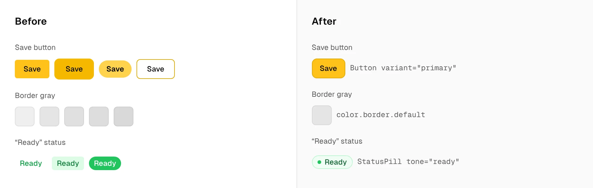
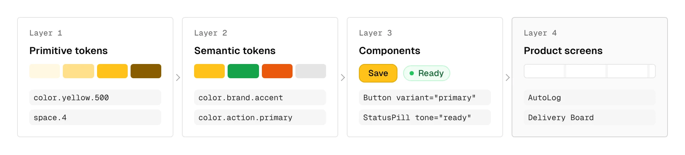
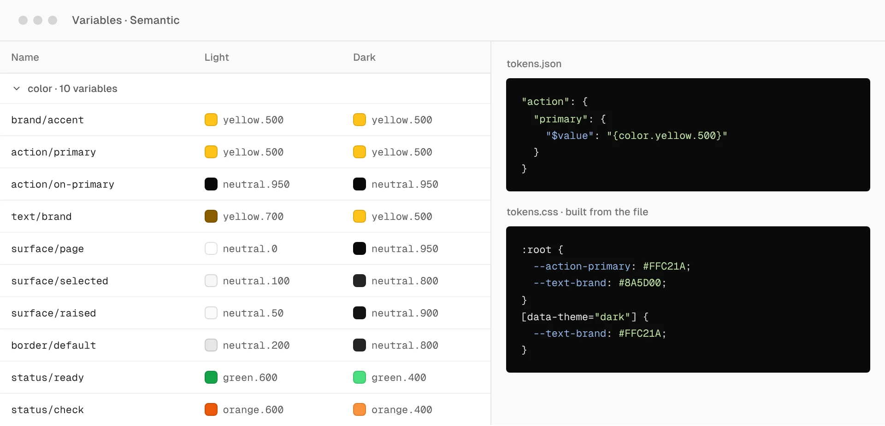
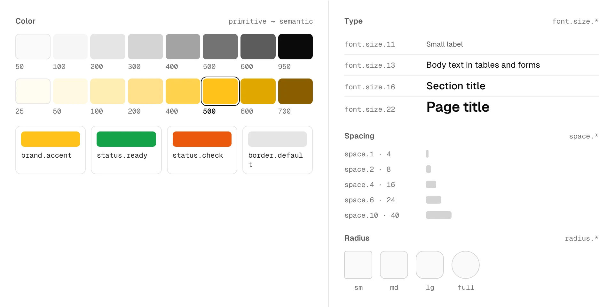
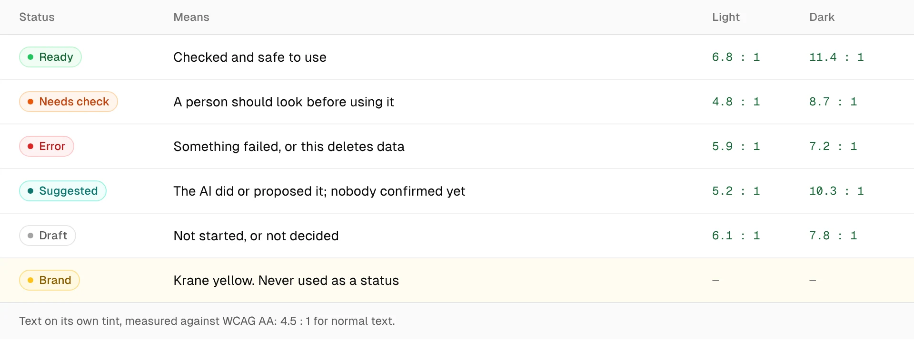
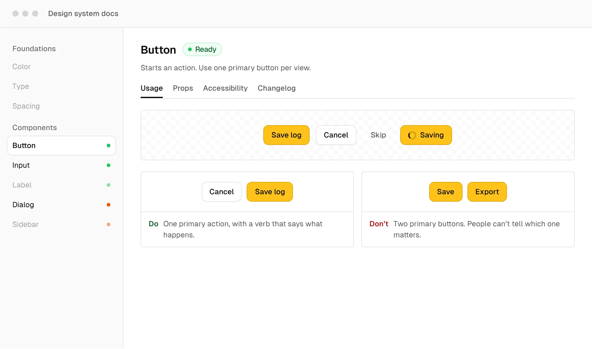

Krane · Design system · 2025 – 2026
Krane Design System: one set of rules for every screen
I was Krane’s only designer. I built its first design tokens, the component library and the rules that keep them healthy.
Every
new screen is still built on it, months after handoff
4 tools
Figma, CSS, JavaScript and TypeScript use the same names
1 fix
reaches every screen
- Role
- Senior Product Designer
- My part
- Tokens, type, components, docs and audits
- Timeline
- 4–5 months, handed off in early 2026
- Status
- Live, the base for every new screen
Krane work is under NDA, so all screens use made-up data.
The problem
The same decisions, made again on every screen
Each new screen meant choosing colours, sizes and spacing again, and engineers rebuilt the same parts in different ways. My audit found the same button built several ways, one-off greys typed straight into screens, and parts rebuilt more than once.

Four layers, each built on the one before
Primitive tokens hold raw values. Semantic tokens say what a value is for. Components use only semantic tokens, and screens use only components. So a change at layer 1 or 2 reaches every screen, and nobody edits a colour on a single screen.

Foundations
One set of names, in Figma and in code
The names had to work in Figma, CSS, JavaScript and TypeScript. I compared four ways to write them and chose dot notation. Every semantic token has a light and a dark value, so a theme is a change of values, not a redesign.

The foundations
88 primitive tokens in 11 categories, from colour and spacing to motion and breakpoints. These are the ones people see most.

Colour
One yellow, used with care
Krane’s brand yellow was already chosen. My job was to make it work in the product. Used everywhere, yellow makes a busy table hard to read, so I wrote three rules.
- One per view
- One yellow button per view. Black on yellow is 12.2 : 1 in both themes, well above the 4.5 : 1 minimum.
- Brand and action only
- Selected filters and rows stay neutral grey, so the data stays in front.
- Never a warning
- No yellow text on white. “Needs check” is orange, so a status never looks like the brand.

Status colours: one meaning each
Construction teams scan long tables for what needs attention. Each status has one colour and one job, sits apart from the yellow, and always comes with a word, never colour alone. Every pair passes WCAG AA in both themes.

Components
Built once, used everywhere
Each component gets a written spec with every state before it’s built: default, focus, error, disabled and loading. It uses only semantic tokens and handles accessibility itself.

Every component has a page
When to use it, its props, do and don’t, and an accessibility checklist. Designers and engineers read the same page, so answers don’t depend on me. The same idea always has the same prop name, so if you know one component, you know them all.

Same components, two themes
The proof that the layers work: both screens use the same components. Only the semantic tokens change.

Adoption
Making the system the easiest way to build
The hardest part was time. Feature work always came first, so there was no room to move old screens over. So I made using the system easier than not using it.
- Paired with engineers
- We built new components together inside real feature work, and moved old ones over one at a time.
- Same names
- A token or prop in my file had the same name in code, so handoff needed less explaining.
- A page per component
- States, props and usage in one place.
The result: handoff got faster, with fewer questions, because names and states already matched. New screens were built from the library first, and old screens moved over in phases.
From idea to release
Nothing gets built without a spec and a sign-off. That keeps one-off components out.
- 1 · Request
- A screen needs something the system doesn’t have.
- 2 · Spec
- States, props, keyboard use and labels, written down.
- 3 · Sign-off
- No spec, no build.
- 4 · Build and audit
- Checked against the spec, in the code itself.
- 5 · Release
- Its docs page is marked Ready, so everyone knows it’s safe to use.
After handoff: an audit, then fixes in phases
Once teams were building with it, I audited the system for version 2. Every finding has the same shape: what’s wrong, the proof from the code, and who it affects. The fixes come after, in phases.

- Phase 1 · Safety
- Ask before deleting in bulk and a loading state on Button (done), then scrolling dialogs, a skip link, and menus that name their row.
- Phase 2 · Tables
- Filter and sort in data tables.
- Phase 3 · Access
- Show or hide by role and permission, and calendar scoping.
Outcome
The same decision, never made twice
Trade-offs I chose
Each choice made the system ship sooner. Each one had a cost, and I accepted it on purpose.
Looking back
What I’d keep, and what I’d change
- What worked
- Agree on the names first. Every later decision was easier, because design and code already used the same names.
- I’d change
- Start the form specs sooner, alongside the tokens. Forms touch every product.
- Where it is now
- Still the base for every new screen. AutoLog and Delivery Board were built with it, and a design partner now leads it.
Let’s talk
I usually reply within 24 hours · It’s --:-- in Coimbatore